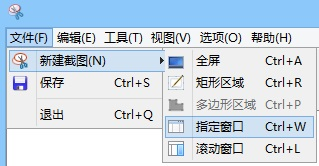

指定窗口截图
一、使用指定窗口截图
1. 点击菜单栏“文件-新建截图-指定窗口”进行指定窗口截图

2. 点击工具栏“截图-指定窗口”进行指定窗口截图
3. 右击系统托盘图标，选择“截图-指定窗口”进行指定窗口截图
4. 使用快捷键Ctrl+W进行指定窗口截图
二、截图过程中的操作
1. 进入截图状态后，鼠标移动到需要截图的窗口上方，稍作等待，
窗口周围出现红色框时，双击可截图
2. 截图过程中按下ESC键，可取消本次截图
3. 截图过程中按下ALT键，截取鼠标所在位置的最底层窗口
4. 截图过程中按下CTRL键，则不截取大窗口